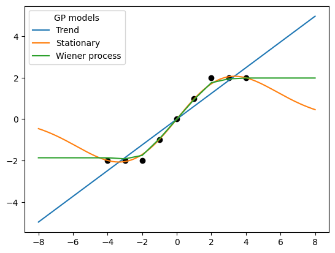

Wiener process
from geostat import GP, Model, Featurizer, Parameters
import geostat.kernel as krn
import matplotlib.pyplot as plt
import numpy as np
x = np.linspace(-8, 8, 321)[:, np.newaxis]
locs = np.array([-4, -3, -2, -1, 0, 1, 2, 3, 4], dtype=float)[:, np.newaxis]
obs = np.array([-2, -2, -2, -1, 0, 1, 2, 2, 2], dtype=float)
featurizer = Featurizer(lambda x: (1., x))
featurizer2 = Featurizer(lambda x: (1.,))
p = Parameters(alpha=0.25)
kernel = krn.TrendPrior(featurizer, alpha=p.alpha) + krn.Noise(0.25)
model = Model(GP(0, kernel)).fit(locs, obs, iters=500)
mu1, _ = model.predict(x)
p = Parameters(range=0.33, sill=1.)
kernel = krn.SquaredExponential(range=p.range, sill=p.sill) + krn.Noise(0.25)
model = Model(GP(0, kernel)).fit(locs, obs, iters=500)
mu2, _ = model.predict(x)
p = Parameters(alpha=0.25, sill=1.)
kernel = krn.TrendPrior(featurizer2, alpha=p.alpha) \
+ krn.Constant(sill=p.sill) \
* krn.Wiener(axis=0, start=-4) + krn.Noise(nugget=0.25)
model = Model(GP(0, kernel)).fit(locs, obs, iters=500)
mu3, _ = model.predict(x)
[iter 50 ll -9.88 time 0.43 reg 0.00 alpha 0.21]
[iter 100 ll -9.88 time 0.23 reg 0.00 alpha 0.21]
[iter 150 ll -9.88 time 0.23 reg 0.00 alpha 0.21]
[iter 200 ll -9.88 time 0.23 reg 0.00 alpha 0.21]
[iter 250 ll -9.88 time 0.23 reg 0.00 alpha 0.21]
[iter 300 ll -9.88 time 0.23 reg 0.00 alpha 0.21]
[iter 350 ll -9.88 time 0.23 reg 0.00 alpha 0.21]
[iter 400 ll -9.88 time 0.23 reg 0.00 alpha 0.21]
[iter 450 ll -9.88 time 0.23 reg 0.00 alpha 0.21]
[iter 500 ll -9.88 time 0.23 reg 0.00 alpha 0.21]
[iter 50 ll -16.37 time 0.50 reg 0.00 sill 1.54 range 0.59]
[iter 100 ll -13.03 time 0.21 reg 0.00 sill 1.72 range 1.09]
[iter 150 ll -10.63 time 0.21 reg 0.00 sill 1.75 range 1.85]
[iter 200 ll -9.75 time 0.21 reg 0.00 sill 1.93 range 2.56]
[iter 250 ll -9.57 time 0.21 reg 0.00 sill 2.25 range 2.91]
[iter 300 ll -9.52 time 0.21 reg 0.00 sill 2.55 range 3.03]
[iter 350 ll -9.50 time 0.20 reg 0.00 sill 2.76 range 3.10]
[iter 400 ll -9.50 time 0.21 reg 0.00 sill 2.90 range 3.14]
[iter 450 ll -9.50 time 0.20 reg 0.00 sill 2.98 range 3.16]
[iter 500 ll -9.50 time 0.21 reg 0.00 sill 3.02 range 3.18]
[iter 50 ll -14.39 time 1.96 reg 0.00 alpha 0.41 sill 0.68]
[iter 100 ll -13.64 time 0.21 reg 0.00 alpha 0.64 sill 0.65]
[iter 150 ll -13.18 time 0.22 reg 0.00 alpha 0.93 sill 0.64]
[iter 200 ll -12.91 time 0.22 reg 0.00 alpha 1.25 sill 0.64]
[iter 250 ll -12.75 time 0.22 reg 0.00 alpha 1.59 sill 0.64]
[iter 300 ll -12.66 time 0.22 reg 0.00 alpha 1.93 sill 0.64]
[iter 350 ll -12.61 time 0.22 reg 0.00 alpha 2.24 sill 0.64]
[iter 400 ll -12.58 time 0.22 reg 0.00 alpha 2.52 sill 0.64]
[iter 450 ll -12.57 time 0.22 reg 0.00 alpha 2.77 sill 0.64]
[iter 500 ll -12.56 time 0.22 reg 0.00 alpha 2.98 sill 0.64]
plt.scatter(locs[:, 0], obs, marker='o', color='black')
plt.plot(x[:, 0], mu1, label='Trend')
plt.plot(x[:, 0], mu2, label='Stationary')
plt.plot(x[:, 0], mu3, label='Wiener process')
plt.legend(title='GP models')
<matplotlib.legend.Legend at 0x7f9df0363ee0>
